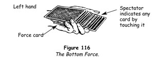
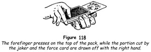

Forcing a card is the act of making a spectator remove from the pack a card that you wish him to take, although he believes that he has a free choice.
The Classic Force
Of all the methods evolved for accomplishing this, the classic force is the oldest and still the best. In this method you spread the deck and invite someone to draw a card. You place the card you want him to take under his fingers at the moment they touch the pack. He removes this card, confident that his choice has not been influenced.
1. Let us say that you wish to force the ace of hearts and this is at the top of the pack. Give the cards an overhand shuffle, taking the card to the bottom and back to the top.
2. Next take the force card to the middle of the pack in the following way. Give the pack another overhand shuffle by undercutting the lower half, injogging the first card and shuffling it off. Turn the left hand so that the pack is horizontal, with the backs of the cards uppermost. Place the right hand over the pack, with fingers at the outer end and the thumb at the inner end. Place the tip of the thumb under the inner edge of the injogged card, pressing it upwards and inwards, so that when it is pushed flush with the pack there will be a small break under it and above the card to be forced. Hold this break with the right thumb, then shift the left hand so that it holds the pack, with the little finger holding the break above the card to be forced. Unlike the usual method of holding a break, the tip of the left little finger in this case rests against the face of the card above the break.
3. Push cards off the top of the pack with the left thumb, taking them with the right hand and request someone to take a card. Press the left little finger firmly against the side of the lower packet, preventing these cards from spreading to the right.
4. Time the spreading of the cards so that, at the moment the spectator's hand reaches the pack, all the cards above the break have been pushed into the right hand and you are beginning to push the cards under it; the first of these cards, you will remember, is the card to be forced.
At the very moment that you begin to push off this lower portion, the spectator's hand arrives at the deck to make a choice. Advance both hands 50-75 mm (2-3 in) towards his hand and literally place the force card under his fingers. That must be done with finesse, and this is where experience enters into the picture. After you have done a good deal of forcing, you will find that there is a knack to spreading the cards so that the force card is under the spectator's fingers at precisely the right moment.
If, when you first begin to force cards, you find that you have exposed the force card too soon, spread a few more cards with the left thumb and stop. Hold the pack as in figure 114. A little more of the force is exposed than of any other card. Now, as the spectator's hand approaches, turn both hands and the cards a little to the left or right a matter of less than 25 mm (1 in), to make the force card the most convenient to his hand. In ninety-nine cases out of a hundred he will take the card.
We have mentioned that the tip of the left little finger presses up into the break against the face of the lowermost card of the upper packet. This is a great help in forcing, for when the left thumb pushes this card to the right you can feel it glide over the fingertip and thus you know that the next card is the force card. With experience you can force a card without looking at the pack, relying solely on your left little finger's sense of touch to tell you when you have come to the force card.
The force is certainly simple, but to do it with dead certainty takes practice and for the timing that comes only with experience. There are also psychological factors which must be kept in mind.
(a) You should shuffle the cards before the force so that you cannot seem to know the position of any card. If the spectator believes this to be the case, he will remove any card without suspicion, since it does not seem to matter which card he takes.
(b) You must not, by your manner or by anything you say, lead anyone to believe that you have a reason for forcing a card. Your manner must be easy and relaxed. If you are tense, this will be noticed, and although the spectator may not know what you have in mind he will be difficult to control.
You may think: Very well. But, while I am gaining experience, what shall I do if the force fails?
Let us say that the force has failed and that a card has been drawn two or three beyond the force card. Have the card returned at the place from which it was taken and count the number of cards intervening between it and the force card. The force card, the name of which you know, thus becomes a key card, and to locate the chosen card you need only count the number of cards above or below it that you noted previously.
If the card has been removed from a point too distant from the force card to enable you to count the intervening cards, have the card withdrawn from the pack and, as its name is being noted, remove all the cards to the right of the force card with the right hand. This is easy, because the tip of the left little finger still presses up against the face of the card just above it. Hold these a small distance away from those spread in the left hand and have the selected card replaced on the left-hand portion. Dropping the cards held by the right hand on top of all completes the action. To find the chosen card, look for the card just above your force card, which acts as a key card.
But what if the force fails and you cannot use the force card as a key card? In such a predicament, you should do another trick that does not require a card to be forced. You have not stated what you would do with the drawn card and no one will know that you have changed your plans. This is very important for you, because the knowledge that failure is not going to prove a disaster will prevent tenseness, which spoils more forces than any other single factor.
A final word on the matter of experience. To get experience, make it a practice to attempt to force a card in every trick you perform, whether it calls for a force or not - if, of course, the nature of the trick permits this. In that way you will get invaluable experience and learn the timing of the force, and if you fail in the first few attempts it is a matter of no consequence. You should never, however, force the same card repeatedly simply to show how clever you are, for this is tantamount to revealing a method which you should keep secret.
One-Hand Force
Few modern card conjurors use this force, although in some respects it is more convincing than the classic force.
1. Shuffle the cards, and in doing so take the card to be forced to the middle of the pack, holding a break above it with the left little finger by using the method given in the classic force.
2. Shift the cards above the break a little more than 6 mm (½ in) to the right, the right hand making this adjustment, so that there is a step between the two packets (figure 115). The topmost card of the packet below the step is the card to be forced.
3. Take the pack in the left hand and with the right hand spread the cards in a fan, contriving to expose a little more of the surface of the force card than of any other.
4. Extend the fan and request someone to take a card. Because the force card is more accessible than the others, it is almost invariably taken. Further to assure this, the slightest movement of the left hand to the right or left will place the force card directly under the spectator's fingers as they reach the pack.
As with the classic pass, the preliminary shuffle makes the force easier, since the spectator believes the cards to have been well mixed, and hence the particular card he removes seems to be of no great importance. However, care must be taken not to expose too much of the force card or the device will be obvious. If it is exposed 6 mm (¼ in) more than the others, this will be sufficient.
The one-hand force is useful for forcing a number of cards one after the other without closing the fan.
Bottom Force
Place the card to be forced at the bottom of the pack and make an overhand shuffle, retaining it there. Follow this shuffle with a false cut or fourth method.
1. Grasp the deck at the ends with the right fingers and thumb, and place it on the left palm, holding it as for dealing.
2. Move all the cards, except the bottom force card, forwards 50 mm (2 in) with the right hand.
3. Pat the outer end with the right fingers, bevelling it inwards from bottom to top until the bottom protruding card is covered (figure 116).

4. Request someone to remove as many cards from the bottom of the pack as he wishes, and point out that the sloping end makes this possible.
5. He will remove a number of cards from the bottom, but he cannot remove the bottom force card, which is beyond his grasp. The cards above those he removes drop on to the left palm and on the bottom force card. Immediately square these cards by rapping on the inner end with the right knuckles. Invite the spectator to look at the bottom card 'to which you cut in the fairest possible manner' and have him show it to everyone as you turn your head.
6. Have him shuffle his packet, then hand him the remaining cards and have him shuffle the whole deck. Knowing the card, you can find it and dispose of it as required for the purpose of the trick in hand.
Slide-out Force
The card to be forced is at the bottom of the pack.
1. Shuffle the pack, running the bottom card to the top and back to the bottom.
2. Make the key undercut, dropping the lower half of the pack on top, but inserting the tip of the left little finger between the two packets to hold a break. The force card is now the card just above the little fingertip.
3. Hand a spectator a table knife and ask him to thrust it into the pack as you riffle the cards. Place the right hand over the pack and riffle upwards from the bottom, contriving to have the blade thrust into the outer end below the break.
4. Tip the outer end of the pack upwards a little, and grasp all the cards above the break at the ends, between the right thumb and middle finger, shifting these cards outwards 25 mm (1 in) beyond the outer end of the pack.
5. Grasp the knife blade and the cards you have shifted over the outer end between the right thumb and middle finger, and draw them outwards and away from the pack (figure 117).
6. Show the card under the blade - the force card - and ask all to note and remember it.
A reversed playing card or a borrowed business card can be used in place of the knife.
Two-Card Force
The two cards to be forced are at the top and bottom of the deck.
1. Run through the cards and hand someone the joker.
2. Make the pass at a point a little above the middle of the deck, but after the packets are transposed press the tip of the left little finger between the packets, holding a break. One force card is the bottom card of the upper packet; the other is the top card of the lower packet.
3. Place the right hand over the pack, with thumb at the inner end and the fingers at the outer. Riffle the cards upwards, and ask the spectator to insert the joker, face upwards, wherever he likes in the pack.
4. Time the riffle to that he thrusts the joker into the pack among the cards above the little finger break. Grasp all the cards above the break at the sides, near the inner end, between the right thumb and middle finger, and draw these inwards and away from the deck. Hold the protruding joker at the outer end with the left thumb and index finger, to prevent it from being drawn away with the upper packet (figure 118).

The illusion is that the pack is separated at the point at which the joker is inserted. Actually the cards under the joker slide away with those above it. This fact is concealed by the joker itself.
5. Show the card at the face of the packet in the right hand, and the one at the top of those remaining in the left hand. These are the force cards.
This two-card force may be used as a 'discovery' of two chosen cards that have been controlled to the top and bottom of the pack, a spectator being invited to thrust the joker into the pack, after which you show that one of the chosen cards is above the joker, the other is below it.
Riffle-Break Force
One or more cards can be forced by this method. These are at the top of the pack.
1. Shuffle the card to be forced to the centre of the deck, and hold the pack in the left hand, with the thumb along one side, the middle and ring fingers at the other, and the little finger holding the break above the card to be forced. Bend the forefinger under the outer end of the pack. Hold the pack with its outer end sloping downwards, and turn the left hand inwards towards the body so that no one on your right can see the little break.
2. Riffle the left outer corners downwards with the thumb, explaining that when you repeat the riffle you would like someone to call 'Stop' whenever he pleases.
3. Riffle downwards again rather slowly, but do not riffle below the break. If the command to stop does not come soon enough, simply begin the riffle again. Try to have the command come when you have riffled to a point just above the break. When it does come, stop the riffle at this point, and press down with the thumb tip upon the cards under it, forming a wide break at this corner.
4. Place the right hand over the pack, with the thumb at the inner end and the fingers at the outer end, which they cover completely. Grasp and slide away to the right all the cards above the little finger break at the inner end. Do not lift these cards away: slide them flatly. Simultaneously press down with the left thumb on the corners of the packet remaining in the left hand, so that its condition appears unchanged.
5. Extend the left hand and have the top card removed, thus forcing the card.
Sliding Key Force
This very deceptive and easy method of forcing a card makes use of the sleight described as the sliding key card.
1. Have the card to be forced on the bottom of the pack, then shuffle overhand, keeping it in that position.
2. Spread the cards between your hands, at the same time sliding the force card underneath to the centre, and invite a spectator to touch the back of any card he pleases.
3. Place the tip of your left thumb on the card to the left of the one touched by the spectator and draw away to the right, with your right hand, the card touched by the spectator and all the cards above it, together with the force card, which automatically becomes the bottom card of the right-hand packet.
4. Square the cards in your right hand by tapping their sides against the cards in the left hand.
5. Turn your head and lift the right-hand packet to a vertical position, asking the spectator to note and remember the card he has chosen freely.
At this point it is not advisable to hand the deck to the spectator to be shuffled at once. It is better to square the pack and execute a short overhand shuffle yourself, and then hand the cards out to be shuffled.
Double-Lift Force
Place the card to be forced at the top of the pack.
1. Give the deck an overhand shuffle, retaining the force card at the top, then take the pack in the left hand, face downwards, as for dealing. Ask someone to name a number between five and fifteen, emphasising that he has a free choice and may change his mind as often as he likes. As you make this statement, prepare for a double lift by inserting the tip of your left little finger under the two top cards.
2. Suppose you are given the number nine. Say, 'Number nine? Very well.' Grasp the two cards above the little finger break at the ends between the right index finger and thumb and carry them away as one card, counting 'One.' Push a second card off the pack with the left thumb and drop it on to the two held by the right hand, counting 'Two.' Continue to deal the cards until you have counted to a number one less than the number given. In the illustration we have used you would count to eight.
3. 'The next card is the card at your number and you will have to admit that, since you yourself named the number, I could not know it in advance. I want you ...' Break off abruptly, as though struck by a thought. Replace the cards you hold in your right hand on top of the deck and extend it to the spectator. 'I don't even want to touch your card,' you explain. 'You take the cards, turn your back, count down to the ninth card, look at it, remember it and then shuffle it back into the pack. Surely nothing could be more fair than that?'
It would be much fairer, of course, if by your subterfuge you had not placed the original top card in the ninth position from the top!
Cut Force
This method of forcing is bold.
1. Place the card to be forced at the bottom of the deck and retain it there while shuffling.
2. Square the pack, place it on the table and request someone to cut it, placing the cut to the right.
3. Next, invite him to pick up the lower packet and place it at right angles upon the cut (figure 119).
4. Pause for a moment, conversing or performing any action which is part of your trick, then have someone lift the upper crosswise packet and look at the card at its face, as you say, 'Please note and remember the card at which you cut.' This will be the original bottom card. So few people understand the nature of the cut that your statement will not be questioned.
You should never repeat a force of this type for the same audience. Knowing what you will do, the spectators will analyse the action and may fathom the method.
TRICKS WITH THE FORCE
Justice Card Trick
Card tricks that are performed while the magician is blindfolded make a particularly profound impression on laymen. For this reason it is a good plan to include one such trick in a routine of card tricks.
1. Ask someone in the gathering to assist you, and when you have a volunteer place him on the left side of your table while you stand behind it. Have him shuffle the deck, and when you take it back glimpse the bottom card. Let us say it is the four of spades. Force this card on your assistant, preferably using the classic force or the one-hand force, and have him show the card to all present. Invite him to replace the card in the deck, make a short shuffle, then hand him the deck and ask him to shuffle it himself.
2. As he does this, take a white linen handkerchief from your pocket and fold it diagonally into a blindfold about 50 mm (2 in) wide. Ask another spectator to tie the blindfold over your eyes. You will find, when you have been blindfolded in this manner, that you can see down the side of your nose and by tilting your head back a little - but not too much - and glancing downwards you can see a certain area of the table top (figure 120). You are supposed to be sightless, however, and therefore now you close your eyes, which will make your actions convincingly realistic.
3. Keeping your eyes tightly closed, take the deck and cut it into two packets, one of which you keep in your hand. Open your eyes and, glancing downwards and holding the cards within your area of vision, deal them face upwards on the table. Count the cards as you deal and when you see the force card - the four of spades - remember the number at which it lies from the top of the packet. Complete the deal without any hesitation and ask the spectator if he has seen his card.
If the card is not in this packet, take the other one and repeat the deal with it, noting the position of the force card - how far it is from the top.
4. Hand the packet containing the force card to the assistant and close your eyes tightly throughout the remainder of the trick; your consequent fumbling will be convincing. Request the assistant to hand you the cards one by one, face downwards, and to think intently of his card. Let us suppose that you know the force card is the eighteenth card in his packet. Take the cards one by one, appearing to concentrate on each card and leading the audience to believe that you will announce when you have been given the proper card. Instead, you wait until you are given the card before the one you know is his; in the present illustration you will take the seventeenth card and hesitate before discarding it.
5. Abruptly you exclaim, 'Just a moment! Hold that next card face downwards.' Lift off the blindfold with your left hand. 'What was the card you were thinking of?' Gesture towards him with your right hand.
'The four of spades.'
'Right! Show that card to everybody!'
He does, and everyone sees that you have stopped him precisely on his card.
Fours of a Kind
The plot of this trick is similar to that of the feat described as The Sevens. It has, however, a delayed climax of the turn-the-tables type.
Prior to the performance remove the fours of clubs, hearts, spades and diamonds. Arrange the deck so that one of these is at the top and the second is directly below it; after the second there is an indifferent card with a third four-spot below it. Place the remaining four-spot second from the bottom.
1. Shuffle the cards by means of the riffle shuffle, without disturbing the two cards at the bottom or the four cards at the top of the pack.
2. Force the four-spot at the top by means of the backslip force and have it placed on the table before the drawer, without permitting its face to be seen.
3. Prepare for a double lift, saying, 'There is a sympathy among cards, which has often been commented on. I believe that I can show you what I mean.' Turn the two top cards as one, showing the indifferent card, which let us say is a nine, and replace the two face downwards on the deck. Remove the top card, a four-spot, and place it face downwards before you, saying, 'This card tells me the value of the card you drew. It is a nine.'
4. Hold the pack in the left hand face downwards as for the glide, tip it up so that the face card, which we shall say is a diamond, can be seen, and say, 'This card indicates the suit. A diamond. We know your card must be the nine of diamonds.' Turn the pack face downwards as you say this, glide back the bottom card, remove the card above it (a four-spot), and place it face downwards before you on the table.
Remove the card that is now above the glided card at the bottom and, using it as a pointer, indicate the two cards before you. 'Remember,' you say, 'a nine here and a diamond here. The nine of diamonds.' Replace the pointer card at the bottom, thus effectively concealing the glided card.
5. At this point the indifferent card is at the top of the pack, with a four-spot directly under it. Make the pass, transposing the upper half to the bottom, and hold a left little finger break between the two packets. Spread the cards from hand to hand and force the fourth four-spot on yourself - a feat that should give you very little trouble! It is only necessary to remove the card below the one above which the little finger maintains control.
Place this card face downwards beside the other three, explaining, 'The purpose of this card will be clear in a moment. As you have seen, the cards say that the one you drew a moment ago is the nine of diamonds. Please turn your card face upwards and show everyone that this is the case.'
6. The spectator turns his card and shows it. Let us say it is the four of the heart suit. Appear a little discomfited, then exclaim, 'My original trick hasn't worked, so I shall do another trick instead. Your card is the four of hearts. Very well. Cards, change!' Tap each of the three cards before you, turn them over, and show that each is a four-spot.
Pulse Trick
You will be surprised at the number of pseudo-scientific explanations that will be offered to explain this trick, in which you name a selected card by reading a lady's pulse, and she in turn reads your pulse and names a card you have selected.
1. Force a card on a lady and, after she has noted its value, have her place it to one side face downwards.
2. Say, 'It is an interesting fact that the principle of the so-called lie detector has been used by magicians for over a century. For instance, it is entirely possible for me to name the card you have chosen by reading your pulse.'
3. Hold her wrist so that you can feel the pulse. Say, 'The lie detector measures physical reaction to stimuli, as we all know. When a significant question is asked, no matter how well the subject may discipline his emotions, his body reacts abnormally. To show you how magicians have used this principle in the past, I shall call out ace, two, three, and so on, and, no matter how well you dissemble, I shall know the value of your card when I name it. I will ascertain the suit in the same way.'
4. Count, 'One, two, three, four,' and so on up to 'king'. Immediately say, 'When I counted five, your pulse jumped. Your card was a five.' Of course, you name the value of the forced card.
5. Repeat this with the four suits, naming the proper one, and have the card turned to prove that you are correct.
Usually there will be some discussion of this phenomenon, and after a moment you offer to prove that what you say is so.
6. Take the pack and shuffle it, withdraw a card and note its value. Place it face down to one side without letting anyone see it.
7. Have the lady feel your pulse and instruct her to call the values and suits as you did. Press the tip of your middle finger firmly against the tip of your thumb, and when the value of your card is named slide your thumb inward on your fingertip for a few millimetres. The muscles of the wrist tighten and this is felt by the lady taking your pulse. When, at the end, you ask her to name the value of your card, she names the proper one.
8. Repeat this with the suit, have it named, turn your card and show that she has named it correctly.
Since you have mentioned 'jumping pulses,' the lady in many cases is prepared to swear that your pulse jumped!